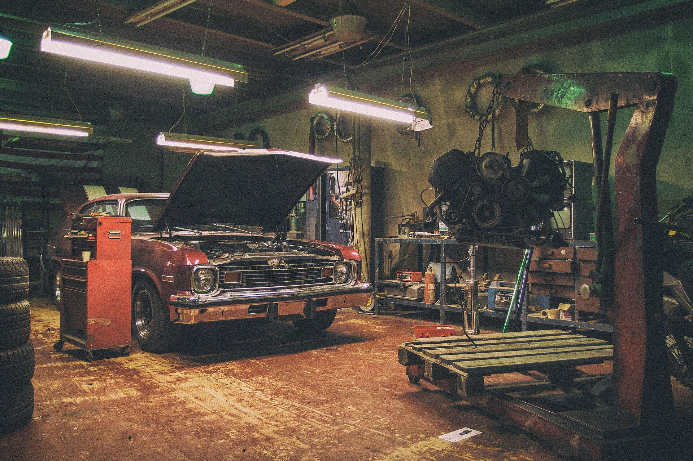

汽車保養廠
線上預約進廠時段
到場不用等
示範畫面
免費 20 項車況檢查（示意）
服務項目
價格為示意
示範畫面，價格和優惠都是示意
照片：Martin Vorel（CC BY-SA 4.0，Wikimedia Commons），已裁切、左右翻轉、調暗

線上預約進廠時段
到場不用等
示範畫面
免費 20 項車況檢查（示意）
價格為示意
示範畫面，價格和優惠都是示意
照片：Martin Vorel（CC BY-SA 4.0，Wikimedia Commons），已裁切、左右翻轉、調暗